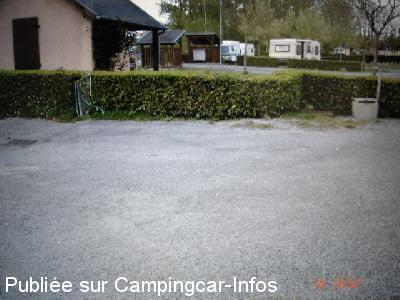
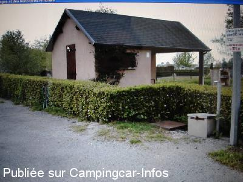

AC = Camping acceptant les camping-cars de :
OLORON SAINTE MARIE
(N° 286)
Accès/adresse :
Chemin de la Gravette
Camping Gîtes du Stade ***
64400 OLORON SAINTE MARIE
Camping Gîtes du Stade ***
64400 OLORON SAINTE MARIE
Latitude : (Nord) 43.17868° Décimaux ou 43° 10′ 43′′
Longitude : (Ouest) -0.62433° Décimaux ou 0° 37′ 27′′
Tarif : 2014
Emplacement, C-C, 2 personnes : 12 €
Personne + 10 ans : 3,50 à 4,50 €
Enfant - 10 ans : 3,50 à 4 €
Électricité : 3,50 €
Animal : 1,20 €
Taxe de séjour : 0,30 €
Type de borne : Artisanale
Services :


Lave-linge
Autres informations :
Ouvert du 01/05 au 30/09
170 emplacements
Tél : +33 (0)559 391 126
GSM : +33 (0)608 350 906
camping-du-stade@wanadoo.fr
http://www.camping-du-stade.com

Le 29/04/2006 par

Le 29/04/2006 par
de
maryline
le 13/09/2014 :
§ Nous avons trouvé ce camping fort sympathique et très calme à 1/4 d'heure à pied du centre ville. Dommage la météo n'était pas au top !!! Nous reviendrons quant il fera beau
tarif juin 2014 : forfait camping car et 2 personnes 12€
électricité 3.50€ taxe 0.30 par personne
§ Nous avons trouvé ce camping fort sympathique et très calme à 1/4 d'heure à pied du centre ville. Dommage la météo n'était pas au top !!! Nous reviendrons quant il fera beau
tarif juin 2014 : forfait camping car et 2 personnes 12€
électricité 3.50€ taxe 0.30 par personne
de
Rolf Ca.
le 13/06/2007 :
Nom: Camping Gîttes du Stade, Chemin de la Gravette
Tél: +33(0)5 59 39 11 26 et (0)6 08 35 09 06
URL: http://www.camping-du-stade.com/
Nom: Camping Gîttes du Stade, Chemin de la Gravette
Tél: +33(0)5 59 39 11 26 et (0)6 08 35 09 06
URL: http://www.camping-du-stade.com/
de
le 15/06/2006 :
Aire pratique mais tarif (4e) à revoir à la baisse compte tenu des prestations minimales.
Aire pratique mais tarif (4e) à revoir à la baisse compte tenu des prestations minimales.
de
J. P. Bedouet
le 28/04/2006 :
Aire simple, mais d'utilisation très pratique. Camping attenant très bien tenu, accueil sympathique.
Aire simple, mais d'utilisation très pratique. Camping attenant très bien tenu, accueil sympathique.